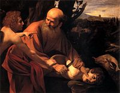
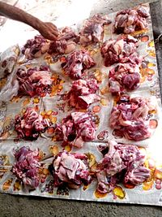
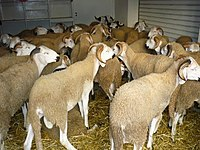
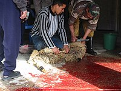
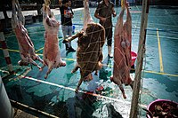

Qurban bayramı — İslam aləmində ən müqəddəs bayramlardan biridir. Bütün müsəlman aləmində hər il hicri təqvimi
ilə zilhiccə ayının 10-cu günündən başlayır və adətən üç gün davam edir. Mərasimlərdə qoyun, qoç, inək, dana və
ya dəvə kəsilir. Qurbandan (niyyətdən asılı olaraq) bir hissə pay göndərilir, digər hissələr isə ehtiyac
sahiblərinə paylanır. Hamıya bərabər pay verilir, qurban kəsən özü də bərabər pay götürə bilər. Ənənəyə görə
dilənçi və kasıblar bayram günü ac qalmasınlar deyə bu gün mərasimlərə dəvət olunurlar.
Hicri təqvimdə Qurban bayramı Zilhiccə ayının onuncu gününə təsadüf edir və dörd gün davam edir. Beynəlxalq
Qriqori təqvimində tarixlər ildən-ilə dəyişir və hər il təxminən 11 gün əvvəl dəyişir.
Qurban bayramı ən qədim bayramlardandır. Dini qurban kəsmə mərasimi İslamdan da əvvəl mövcud olub, lakin o vaxtlar
günahdan təmizlənmək, qəzəblənmiş Allahın könlünü almaq və s. nəzərdə tutulurdu.
Hicrinin (Məhəmməd Peyğəmbərin Məkkədən Mədinəyə köçməsinin) ikinci ilindən sonra dini qurban kəsmənin İslam
aləmində başqa məqsədləri və səbəbləri yarandı. Belə ki, dini qurban kəsmə islam aləmində böyük ruh yüksəkliyi,
dindarlıq, xeyriyyəçilik, başqalarına kömək etmək kimi əlamətlərə yiyələndi.[1]

İbrahim Peyğəmbərin oğlunu Allaha qurban etmək istəməsi
Dini qurban kəsmə İbrahim Peyğəmbərin həyatında baş verən əhvalatdan sonra yaranmışdır. Belə ki, Allah İbrahim
peyğəmbərə oğlu İsmayılı qurban verməyi (onların Allaha imanını yoxlamaq üçün) əmr edir. İbrahim əsl dindar kimi Allahın
əmrini yerinə yetirməyə hazır idi, İsmayıl özü də qurban olmağa razılaşır. Bu haqda Quranda yazılmışdır.
Allaha qəlbən yaxın və sadiq olduğunu sübut etmək istəyən İbrahim Peyğəmbər oğlu İsmayılı qurban kəsməyə hazır idi.
Lakin uca Allah bunu öz elçisinə rəva bilmədi və qurbanlıq üçün ona bir qoç göndərdi. Buna görə də Qurbanlıq bayramında
kəsilən qurbana "İsmayıl qurbanı" da deyirlər.
Çox sevdiyi balasını Allah yolunda qurban verməyə hazır olması peyğəmbərin Allah qarşısında imanının, səmimiliyinin və
mütiliyinin bariz sübutudur. Odur ki, din tarixində dərin iz salmış bu hadisə Allaha inamın, dərin etiqadın nümunəsidir.
Bu hadisə onu göstərir ki, insanlar Allahı sonsuz imanla sevməli və öz sevgilərində bu cür səmimi olmalıdırlar. Çətin
anlarda Allahı da yada salıb, yaxşı zamanlarda Onu unutmaq möminə yaraşan hərəkət deyil!
Qurban Bayrami
Characteristic
Növ
Rəsmi dövlət bayramı
Bağlıdır
Ramazan bayramı
Bu rəvayətin başqa bir fəlsəfi-əxlaqi mənası ondan ibarətdir ki, İslamda insanın Allah yolunda qurban kəsilməsi qəbul
olunmur. İslama qədər bir çox dinlərdə insanları qurban vermə ayinlərinə rast gəlmək mümkündür. Məsələn, atəşpərəstlər
insanı odda yandırırdılar. Onlar bu yolla Allaha yaxın olduqlarını göstərirdilər. Qədim Çində də insanları tanrılara
qurban vermək adəti var idi. Bu ölkədə təbii fəlakətlərdən, daşqınlardan hifz olunmaq üçün uşaqları suya
atırdılar.
Qurban bayramı Azərbaycanda
İslam dünyasının ən müqəddəs bayramlarından sayılan Qurban bayramı bütün müsəlman ölkələrində təmtəraqla qeyd olunur.
Azərbaycan müstəqillik əldə etdikdən sonra Milli Məclisin qəbul etdiyi 1992-ci il 27 oktyabr tarixli "Azərbaycan
Respublikasının bayramları haqqında" Qanununa əsasən Qurban bayramı Azərbaycanda da dövlət səviyyəsində bayram
edilir.
Qurban bayramı İslamda
Üç səmavi dinin – Yəhudilik, Xristianlıq və İslamın hər üçündə də müxtəlif formada qurbanlıq mövcuddur. Lakin İslamda
bu ayin xüsusı mahiyyət və əhəmiyyət kəsb edir. Onun əsasınzzda Allaha sonsuz sevgi, Onun qüdrətinə dərin inam və
iman
işığı durur.
İnsanları halallığa, paklığa səsləyən Qurban bayramının çox maraqlı tarixi və şərtləri var. Bütün dinlərdə icra
edilən qurban İslamda hicrətin ikinci ilində əmr edilmişdir. İslama görə, qurban "Allaha yaxınlaşdıran şey" mənasına
gəlir. Bir başqa sözlə ifadə etsək, qurban Allaha yaxınlaşaraq, onun rizasını qazanmaq üçün Qurban bayramı günündə
ibadət niyyətiylə və Allahın adıyla kəsilən heyvana deyilir.
Qurban bayramı İslam aləminin ən möhtəşəm və müqəddəs bayramıdır, dərin tarixə malikdir və hər il dünya müsəlmanları
tərəfindən qeyd edilir. Bu bayram özü ilə hamıya saflıq, təmizlik gətirir.
Qurbanı və ya qurban ibadətini ifadə etmək üçün bir sıra İslami terminlərdən istifadə edilir. Onların arasındakı
müəyyən məna fərqləri vardır:
Qurbanlıq heyvanın qanı uşağın alnında
Zəbh : İbrani dilində "Zəbah" kəlməsi ilə oxşar olan "zəbh", "heyvanları qurban bayramı günündə
qurban niyyətiylə
və ya adi günlərdə yemək üçün kəsmək" mənasındadır.
Nəhr: Bu sözün hərfi mənası "boynun şahdamarını kəsmək" deməkdir ki, bu da dəvə qurban
edilərkən sinəsinə bıçaq
və s. sancmaq mənasında işlədilmişdir. Çünki bu cür kəsmək şəkli digər kiçik heyvanları kəsməkdən fərqlidir.
Qurban: İbrani dilində "gorban" kimi, "Allah üçün verilən hər hansı bir qurban" mənasına gəlir.
Udhiyyə : "Udhiyyə" kəlməsi Quranda keçməsə də, hədis kitablarında keçir və "kitab başlığı"
kimi də işlədilir.
Hədy : "Allaha mənəvi cəhətdən yaxınlaşmaq məqsədilə və ya həcc vaxtı ehram qadağası pozulduğu
üçün Kəbəyə
aparılan və ya özü yaxud pulu göndərilən qurban" deməkdir.
Mənsək : '"Qurban ibadəti"ni ifadə etmək üçün işlədilir.

Qurbanlıqdan pay çıxarılması
Müqəddəs Quranda Qurban bayramı barədə
"Rəbbin üçün namaz qıl və qurban kəs!", "De ki: "Mənim namazım da, kəsdiyim qurban da, həyatım və ölümüm də aləmlərin
Rəbbi – Allah üçündür", "Biz hər bir ümmət üçün bir qurbangah müəyyən etdik ki, Allahın onlara ruzi verdiyi
dördayaqlı heyvanların üstündə (onları kəsdikləri zaman) Allahın adını çəksinlər" kimi münasibətlər göstərilir. Ənəs
ibn Malikdən rəvayət olunan hədisdə isə Peyğəmbər demişdir: "Bayram namazından sonra qurban kəsən ibadətini
tamamlamış və müsəlmanların sünnəsinə (yoluna) əməl etmişdir".
Qurban bayramında hər bir imkanlı müsəlman qurban kəsib, onun ətini imkansızlara, kasıblara paylamalıdır. Burda əsas
məqsəd dindarlığa nail olmaqdır. Quranda yazılıb: "Allaha nə ət, nə onun qanı çatmır, ancaq sizin dindarlığınız
çatır".
İnsan Allahın yaratdığı ən şərəfli və ən üstün məxluqdur. Allah özünün yaratdığını özü yolunda qurban kəsilməsini
qəbul etmir[2].

Qurbanlıq qoçlar

Qurbanların kəsilməsi
Şərtləri
smayıl Qurbanında kəsilən heyvanlarda bir sıra şərtlər vacib sayılır. Qurbanlıq kimi seçilən heyvan qoç, iribuynuzlu
dana, yaxud da dəvə olmalıdır. Nəsil artımında dişi heyvanların müstəsna rolu olduğuna görə qurbanlıq heyvanın erkək
olması daha üstün tutulur. Qurbanlıq qoçun yaşına gəlincə, bu, ən azı altı aylıq heyvan olmalıdır. Lakin dana, yaxud
dəvənin bir yaşı tamam olsa, daha yaxşıdır. Qurbanlıq dəvənin beş yaşı tamam olmalıdır. Qurban bayramında kəsilən
heyvanın sağlam olması da vacib şərtdir. Əzalarında hər hansı nöqsanı olan, buynuzunun, yaxud qulağının biri
olmayan, axtalanmış heyvanın qurban kəsilməsi İslamda məsləhət görülmür. Kəsiləcək qurbanlıq gözəgəlimli olmalıdır.
Bu bayramın əsas mahiyyəti Allah yolunda kəsilmiş qurbanlıq heyvanın ətini Allahın imkansız bəndələri ilə bölüşmək,
onları sevindirmək və ayinin də əsasında, orucluqda olduğu kimi, xeyirxahlıq, paklıq və Allaha inam və sevgi durur.
Bəzən bir neçə adam bir heyvan alıb onu öz aralarında bölüşməklə, yaxud gedib bazardan ət alıb gətirməklə öz
qurbanını kəsmiş hesab edirlər. Lakin İslam dininə görə bunlar qurbanlıq hesab olunmur. Əlbəttə, bir neçə nəfər
yığışıb bir dananı qurban kəsə bilərlər, bu şərtlə ki, hər bir şəxsə düşmüş ət payını ən azı üç hissəyə bölmək
mümkün olsun. Bu hissələrdən biri onların öz ailəsinə sərf olunmalı, qalan hissələr isə fəqir-füqəraya
paylanmalıdır.
Qurbanlığın ən gözəl xüsusiyyətlərindən biri odur ki, burada din, məzhəb ayrı-seçkiliyinə yol verilmir. Bu bayramda
istənilən dindən olan yetimin, kimsəsizin və yoxsulun haqqı var ki, varlının imkanlarından bəhrələnsin, adi günlərdə
yeyə bilmədiyi qurbanlıq ətindən dadsın. Qurbanlıq o deməkdir ki, insanlar Allahın xoşuna gələcək bir əməli icra
edirlər.
Qurbanlığın şərtlərindən biri də budur ki, qurban kəsmək yalnız buna imkanı olan varlı adamların boynunda haqdır.
İmkanı olmayan adama isə qurban kəsmək vacib deyil. Qurban kəsmək üçün borc pula heyvan almaq İslamda təqdir
olunmur, çünki bu bayramın əsas mahiyyəti zənginlərlə imkansızların birliyi, qardaşlığıdır. Bu bayramda hamı
sevinməlidir: varlılar-Allaha xoş gedən əməli icra etdikləri və kasıbları sevindirdiklərinə görə, kasıblar isə-dünya
nemətindən əldə etdiklərinə və başqalarından gördükləri mərhəmətə və qayğıya görə.

Qurban əti
İstinadlar
"Qurban bayramı". 2016-03-05 tarixində orijinalından arxivləşdirilib. İstifadə tarixi: 2021-01-21